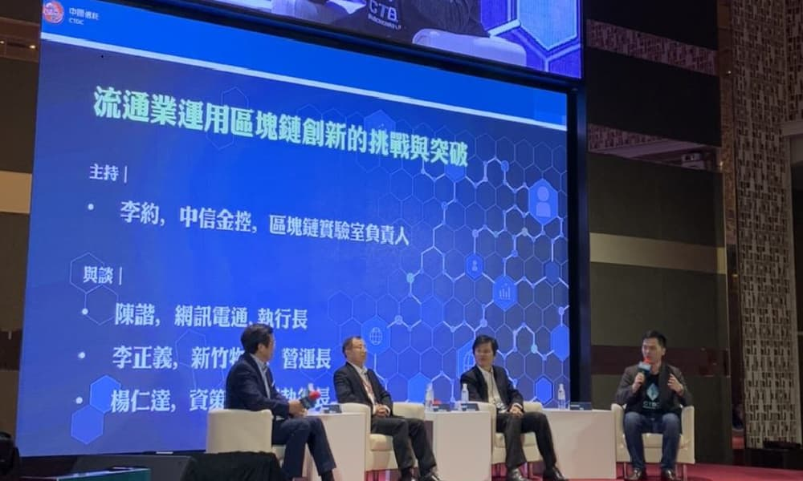

熱門消息 1 01 中信銀跨足區塊鏈有成，助3大領域加速創新 瞭解更多 2 02 區塊鏈金融，迎新生力軍 Contour 瞭解更多  3 03 中信金控揭露未來區塊鏈戰略，連手兩大國際組織，力推雙平台... 瞭解更多 4 04 幫導購報酬卻龜速入帳?電商揪中信金、微軟用區塊鏈搞定... 瞭解更多 5 05 區塊鏈助攻，保險理賠更輕鬆 瞭解更多
新聞列表 全類別 供應鏈 電商零售 醫療健康 醫療健康 2020/8/10 醫療健康 2020/8/10 台灣人壽獲獎連連 再奪國際7大獎肯定... 台灣人壽獲獎不斷！知名財金雜誌《亞洲銀行及財金雜誌》日前公佈，台灣人壽以理賠服務及商品創新拿下本屆「臺灣年度理賠創新」及「臺灣年度新保險… 醫療健康 2020/7/13 醫療健康 2020/7/13 區塊鏈助攻 保險理賠更輕鬆... 台灣保險業基礎建設再升級，區塊鏈成為簡化壽險業大筆資料與理賠投保的技術顯學。未來民眾如果同時持有多家保險公司保單，利用7月1日起上路的保險… 醫療健康 2020/5/13 醫療健康 2020/5/13 台灣人壽 新增理賠區塊鏈醫院... 以區塊鏈技術申請理賠服務適用範圍再擴大。中國信託金融控股公司旗下子公司台灣人壽保險股份有限公司（簡稱「台灣人壽」）宣布，繼高雄榮總後，即… 供應鏈 2020/2/24 供應鏈 2020/2/24 區塊鏈金融 迎新生力軍Contour... 全球聯盟R3推動的區塊鏈金融去年深耕貿易融資項目，今年R3除了有新名字「Contour」和獨立新公司，更廣納包括花旗、滙豐、渣打、中信金等七… 區塊鏈 2020/2/3 區塊鏈 2020/2/3 中信金控號召產業共創 搶攻區塊鏈生態圈商機... 全球知名資訊科技市調與研究公司IDC預測，二〇二二年全球區塊鏈投資金額將達一二四億美元，因此面對區塊鏈進入應用爆發期，中信金控舉辦… 區塊鏈 2019/12/20 區塊鏈 2019/12/20 中信銀跨足區塊鏈有成，助3大領域加速創新... 根據世界貿易組織（WTO）今年11月發表《Blockchain & DLT in Trade: A Reality Check》報告，中國信託… 區塊鏈 2019/12/19 區塊鏈 2019/12/19 中信金控揭露未來區塊鏈戰略，聯手兩大國際組織，力推雙平臺瞄準內部... 中信金控技術長賈景光昨天揭露了自家區塊鏈戰略！自三年前成立區塊鏈研究團隊，並加入全球最大的金融區塊鏈聯盟R3後，對內，中信以區塊鏈實驗室為… 供應鏈 2019/12/18 供應鏈 2019/12/18 中信區塊鏈「應用趨勢論壇」現場：Voltron信用狀明年釋出，國際貿易... 中國信託金控在今天（18）召開區塊鏈應用趨勢論壇《鏈結新商機，邁向商轉新時代》，圍繞著「國際貿易」、「健康醫療」和「電商零售」這三大主題做… 區塊鏈 2019/12/18 區塊鏈 2019/12/18 區塊鏈商轉新時代 中信銀推秘密武器... 2019年區塊鏈應用大爆發，國銀搶攻商轉商機。中國信託18日舉辦「2019 CTBC Blockchain Day 應用趨勢論壇」，中國信託… 區塊鏈 2019/12/18 區塊鏈 2019/12/18 中信金攻區塊鏈 三箭齊發... 中信金控技術長賈景光昨（18）日表示，中信金在區塊鏈、人工智慧等重要科技，會積極大膽嘗試，以共創價值、解決痛點的方式，加速區塊鏈在國內的商… 電商零售 2019/12/18 電商零售 2019/12/18 網訊電通、新竹物流、資策會合組「新零售大聯盟」未來掀零售業的區塊鏈... 隨著區塊鏈的應用層面越來越廣，未來將會逐漸顛覆人們原有的生活及傳統商業模式，現在連零售業都趕搭這波熱潮，誓言要為零售業帶來新氣象。中國信… 電商零售 2019/11/30 電商零售 2019/11/30 金融小學堂／區塊鏈創新 提升交易意願... 經過2017年ICO（首次貸幣發行）淘金熱的瘋狂，以及2018年自雲端跌落低谷的失落，區塊鏈技術於2019年以更成熟、務實的姿態重回全球舞台… 供應鏈 2019/11/25 供應鏈 2019/11/25 深入解讀｜「中國信託」和 7 家國際銀行的「Voltron 貿易金融區塊鏈... 中國信託商業銀行在 10 月下旬宣布他們已經在 R3 聯盟中合作開發的 Voltron 區塊鏈平台上試行成功，創下全球首次橫跨歐亞地區的區塊… 供應鏈 2019/10/23 供應鏈 2019/10/23 區塊鏈應用突破，中國信託完成歐亞信用狀交易... 中國信託商業銀行 22 日宣布，已在區塊鏈信用狀平台上完成台灣首筆真實交易，這也是全球首次橫跨歐亞地區的區塊鏈信用狀交易。這對於國際貿易的發… 供應鏈 2019/10/23 供應鏈 2019/10/23 中信奇美實 創區塊鏈交易首例... 中信金控發展數位金融，提供國際貿易客戶最佳服務，中信銀攜手奇美實業，2019年10月在全球最大的區塊鏈信用狀平台完成台灣首筆真實交易試行… 供應鏈 2019/10/23 供應鏈 2019/10/23 全台首例！中信區塊鏈信用狀交易開通... 中國信託商業銀行 (中信銀行) 昨（22）日宣佈，攜手奇美實業，在全球最大的區塊鏈信用證平臺，完成臺灣首筆真實交易試行，這也是全球第一個橫跨… 電商零售 2019/10/4 電商零售 2019/10/4 幫導購報酬卻龜速入賬？電商揪中信金、微軟用區塊鏈搞定網紅分潤痛點... 網紅時代來臨，沂動行銷攜手台灣微軟與中國信託金控，一同打造台灣首家網紅導購電商「SOOCKER 搜客」，向品牌以及網紅提供媒合及導購等服務… 醫療健康 2019/7/31 醫療健康 2019/7/31 線上就能申請理賠！台灣人壽與高雄榮總合作 打造理賠區塊鏈平台... 台灣人壽與高雄榮民總醫院去年底共同簽署醫療理賠區塊鏈合作備忘錄，並於今（31）日正式落地，推出共同打造的5甘單（便利、簡單、安全、自主且透明… 供應鏈 2018/5/31 供應鏈 2018/5/31 中信銀攜手陽明海運 區塊鏈加速國際貿易... 為解決傳統國際貿易流程中，高度仰賴紙本作業的不便，中信銀與陽明海運合作，首度將區塊鏈技術應用於貿易融資，為共同客戶奇美實業完成國內首例區… 電商零售 2018/4/24 電商零售 2018/4/24 KKFARM推出區塊鏈技術架構Muzeum，要將內容授權代幣化和分潤自動化，... KKFARM在4月24日正式發表區塊鏈創意產業協定Muzeum，不只音樂，更要解決文創產業的痛點，透過區塊鏈技術架構，讓所有數位資產都能在此… 電商零售 2018/1/11 電商零售 2018/1/11 音樂人的希望！台灣首個區塊鏈音樂發行平台Soundscape上線... KKBOX成立、成軍半年的投資公司「KKFARM」（科科農場），在今(11)日正式發表國內首個結合區塊鏈的音樂發行平台「Soundscape… 區塊鏈 2016/10/26 區塊鏈 2016/10/26 台灣首家！中信宣布成立區塊鏈實驗室，加入 R3 國際聯盟... 中國信託商業銀行（簡稱「中國信託銀行」）本（ 10）月啟動 區塊鏈（ Blockchain）發展計畫，正式加入目前國際最大金融區塊鏈聯盟，成… 供應鏈 2020/2/24 供應鏈 2020/2/24 區塊鏈金融 迎新生力軍Contour... 全球聯盟R3推動的區塊鏈金融去年深耕貿易融資項目，今年R3除了有新名字「Contour」和獨立新公司，更廣納包括花旗、滙豐、渣打、中信金等七… 供應鏈 2019/12/18 供應鏈 2019/12/18 中信區塊鏈「應用趨勢論壇」現場：Voltron信用狀明年釋出，國際貿易... 中國信託金控在今天（18）召開區塊鏈應用趨勢論壇《鏈結新商機，邁向商轉新時代》，圍繞著「國際貿易」、「健康醫療」和「電商零售」這三大主題做… 供應鏈 2019/11/25 供應鏈 2019/11/25 深入解讀｜「中國信託」和 7 家國際銀行的「Voltron 貿易金融區塊鏈... 中國信託商業銀行在 10 月下旬宣布他們已經在 R3 聯盟中合作開發的 Voltron 區塊鏈平台上試行成功，創下全球首次橫跨歐亞地區的區塊… 供應鏈 2019/10/23 供應鏈 2019/10/23 區塊鏈應用突破，中國信託完成歐亞信用狀交易... 中國信託商業銀行 22 日宣布，已在區塊鏈信用狀平台上完成台灣首筆真實交易，這也是全球首次橫跨歐亞地區的區塊鏈信用狀交易。這對於國際貿易的發… 供應鏈 2019/10/23 供應鏈 2019/10/23 中信奇美實 創區塊鏈交易首例... 中信金控發展數位金融，提供國際貿易客戶最佳服務，中信銀攜手奇美實業，2019年10月在全球最大的區塊鏈信用狀平台完成台灣首筆真實交易試行… 供應鏈 2019/10/23 供應鏈 2019/10/23 全台首例！中信區塊鏈信用狀交易開通... 中國信託商業銀行 (中信銀行) 昨（22）日宣佈，攜手奇美實業，在全球最大的區塊鏈信用證平臺，完成臺灣首筆真實交易試行，這也是全球第一個橫跨… 供應鏈 2018/5/31 供應鏈 2018/5/31 中信銀攜手陽明海運 區塊鏈加速國際貿易... 為解決傳統國際貿易流程中，高度仰賴紙本作業的不便，中信銀與陽明海運合作，首度將區塊鏈技術應用於貿易融資，為共同客戶奇美實業完成國內首例區… 電商零售 2019/12/18 電商零售 2019/12/18 網訊電通、新竹物流、資策會合組「新零售大聯盟」未來掀零售業的區塊鏈... 隨著區塊鏈的應用層面越來越廣，未來將會逐漸顛覆人們原有的生活及傳統商業模式，現在連零售業都趕搭這波熱潮，誓言要為零售業帶來新氣象。中國信… 電商零售 2019/11/30 電商零售 2019/11/30 金融小學堂／區塊鏈創新 提升交易意願... 經過2017年ICO（首次貸幣發行）淘金熱的瘋狂，以及2018年自雲端跌落低谷的失落，區塊鏈技術於2019年以更成熟、務實的姿態重回全球舞台… 電商零售 2019/10/4 電商零售 2019/10/4 幫導購報酬卻龜速入賬？電商揪中信金、微軟用區塊鏈搞定網紅分潤痛點... 網紅時代來臨，沂動行銷攜手台灣微軟與中國信託金控，一同打造台灣首家網紅導購電商「SOOCKER 搜客」，向品牌以及網紅提供媒合及導購等服務… 電商零售 2018/4/24 電商零售 2018/4/24 KKFARM推出區塊鏈技術架構Muzeum，要將內容授權代幣化和分潤自動化，... KKFARM在4月24日正式發表區塊鏈創意產業協定Muzeum，不只音樂，更要解決文創產業的痛點，透過區塊鏈技術架構，讓所有數位資產都能在此… 電商零售 2018/1/11 電商零售 2018/1/11 音樂人的希望！台灣首個區塊鏈音樂發行平台Soundscape上線... KKBOX成立、成軍半年的投資公司「KKFARM」（科科農場），在今(11)日正式發表國內首個結合區塊鏈的音樂發行平台「Soundscape… 醫療健康 2020/8/10 醫療健康 2020/8/10 台灣人壽獲獎連連 再奪國際7大獎肯定... 台灣人壽獲獎不斷！知名財金雜誌《亞洲銀行及財金雜誌》日前公佈，台灣人壽以理賠服務及商品創新拿下本屆「臺灣年度理賠創新」及「臺灣年度新保險… 醫療健康 2020/7/13 醫療健康 2020/7/13 區塊鏈助攻 保險理賠更輕鬆... 台灣保險業基礎建設再升級，區塊鏈成為簡化壽險業大筆資料與理賠投保的技術顯學。未來民眾如果同時持有多家保險公司保單，利用7月1日起上路的保險… 醫療健康 2020/5/13 醫療健康 2020/5/13 台灣人壽 新增理賠區塊鏈醫院... 以區塊鏈技術申請理賠服務適用範圍再擴大。中國信託金融控股公司旗下子公司台灣人壽保險股份有限公司（簡稱「台灣人壽」）宣布，繼高雄榮總後，即… 醫療健康 2019/7/31 醫療健康 2019/7/31 線上就能申請理賠！台灣人壽與高雄榮總合作 打造理賠區塊鏈平台... 台灣人壽與高雄榮民總醫院去年底共同簽署醫療理賠區塊鏈合作備忘錄，並於今（31）日正式落地，推出共同打造的5甘單（便利、簡單、安全、自主且透明…